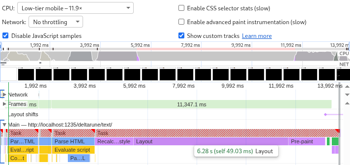
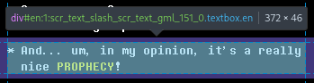
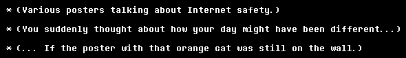
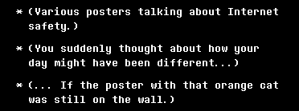
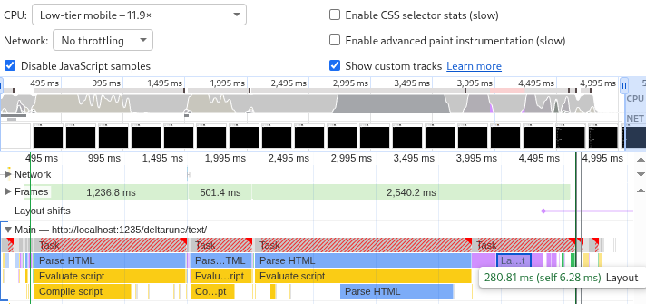
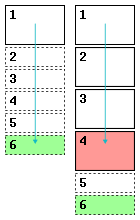

I maintain a web page with over a megabyte of text. (Specifically, most of the in-game text of the video game Deltarune.) It's important that all the text is on one page: the usual mode of interaction is to press Ctrl+F for page search, look up some phrase you remembered, then either look up something else or scroll down and relive the good memories.
Unfortunately browsers find it difficult to have that much text on one page. On my own machines it's just kind of slow, but my users have horror stories of the page taking half a minute to load, or crashing, or even rebooting their whole system.
The page isn't doing anything crazy. It's 30,000 messages (each an individually linkable
<div>) laid out flat with headers and some light styling. But this is
apparently too heavy and I need headroom to get more elaborate later.
Chromium's profiler with CPU throttling set to "Low-tier mobile" says loading the page takes 14 seconds, and that 6 of those 14 seconds are spent on "Layout". So let's start there.

Each element has a certain amount of text broken into lines depending on the screen width. The text and the styles decides the size of the element, which affects its own position on the page and that of all the elements after it.

This has to be calculated upfront to make scrolling work: if the user clicks the scrollbar and drags it halfway down the page, what exactly should come into view?
This needs to be less expensive.
Applying
content-visibility: auto
to an HTML element stops it from rendering while it's off-screen. Elements that are out
of sight have a size of zero, or of whatever you set with
contain-intrinsic-size. Only when they come into view does the browser do all the hard work.
Applying this to the whole page doesn't do anything because the page is always in view.
Applying it to individual messages still means that the browser has to track 30,000 of
them. A good middle ground is to group the messages into <section>s,
one below each heading. When a <section> comes into view the browser
calculates the true size of all its <div> children (the messages).
If the true size is different from the contain-intrinsic-size then the page
height changes as you scroll, which can look weird, especially if you're dragging the
scrollbar. To mitigate that the true height is estimated based on the number of hard
line breaks:
const numLines = (msg || "").split(/\n|<\/div><div/).length;
sectionHeight += 10 + 18 * numLines;
[...]
newHTML += '<section style="contain-intrinsic-height:auto ' +
sectionHeight +
'px">' +
sectionHTML +
"</section>";On wide screens this is accurate. On narrow screens line wrapping makes the true height bigger than the estimate. Compare:


These lines are estimated as 28 pixels tall but wrap to become 46 pixels tall.
But this only gives weirdness if you scroll gradually down the page. And page search still works. The browser can find text of unrendered elements. So, is it worth it?
Layout went down from 6 seconds to just 280 milliseconds, and the other rendering tasks shrank as well. The total page load time is down from 14 seconds to 5 seconds.

This is such a big improvement that it'd be criminal not to ship it. People on phones suffer the most from the inaccurate heights (because of narrow screens) but benefit the most from the improved load time (because of underpowered hardware).
So I shipped it.
I tested this change on desktop Firefox, desktop Chromium, and mobile Firefox. After release I discovered that it breaks on mobile Chromium.
A page search in those other browsers instantly snaps to the result. In mobile Chromium it whizzes down the page with an animation. On the way it triggers visibility for all the sections that it passes, which increases the page height, so it undershoots and puts you at the wrong part of the page.

Page search is a dealbreaker. To keep using content-visibility the height
estimates have to be perfectly accurate.
They can't be perfectly accurate as long as they depend on the exact screen width. So let's add hard line breaks to wrap all messages at a really narrow width no matter what:
Setting text-wrap: nowrap then makes the estimates perfectly accurate.
Everything works again.
Forcing a text wrap is sad but not completely unreasonable since the game also wraps the messages at about that width. (Sometimes narrower, sometimes wider.)
The browser wraps exactly as much as needed. The new code always wraps pessimistically. A compromise is to only wrap on narrow screens. Above 800 pixels the line wraps are turned back into regular spaces and the estimates are adjusted to match.
'\n ', insert
'<span class="break">\n </span>'.
On wide screens, render these <span>s as a single space:
@media (min-width: 800px) {
span.break {
white-space: normal;
text-wrap: nowrap;
}
}Estimate two heights instead of one and store them as CSS variables:
<section style="--narrow-height:27346px;--wide-height:18454px;">Apply them conditionally:
section {
content-visibility: auto;
contain-intrinsic-height: auto var(--narrow-height);
}
@media (min-width: 800px) {
section {
contain-intrinsic-height: auto var(--wide-height);
}
}Now we get to eat our cake and have it too. The text looks good on both narrow and wide screens, scrolling works fine, and the 3× speedup is preserved.
The code is fast because it knows more than the browser. It calculates heights and wraps lines so the browser doesn't have to.
The page still generates lots of HTML, and the browser has to spend CPU time to parse it and RAM to store it. It could be still more efficient by not generating the HTML at all until it comes into view. But that would break page search.
Also, though searching on mobile Chromium now moves you to the right spot, it still loads all the sections it scrolls past. Some users report that the page loads fine but crashes when they try to search.
Even worse, Chromium's page search doesn't cross <span>s. Searching
for single words works but looking up phrases fails if those phrases happen to contain
line breaks or colored text.
All of this can be solved by building a custom search interface to replace the browser search. But that's another post.